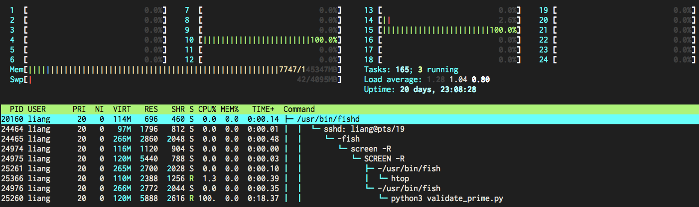

Aweful feelings ...
Engineers' time is more valuable than computing, but many algorithms is hard to make it parallel.
Liang Bo Wang (亮亮), 2014-05-17
From Taiwan R User Group, more info on Meetup.
亮亮 CC 4.0 BY
Esc to overview
← → to navigate


Multithread, threading, does not work as expected because of GIL.
 (From David Beazley's Understanding GIL)
(From David Beazley's Understanding GIL)

In[1]: from IPython.parallel import Client
rc = Client() # connect controller
In[2]: dview = rc[:] # return a View